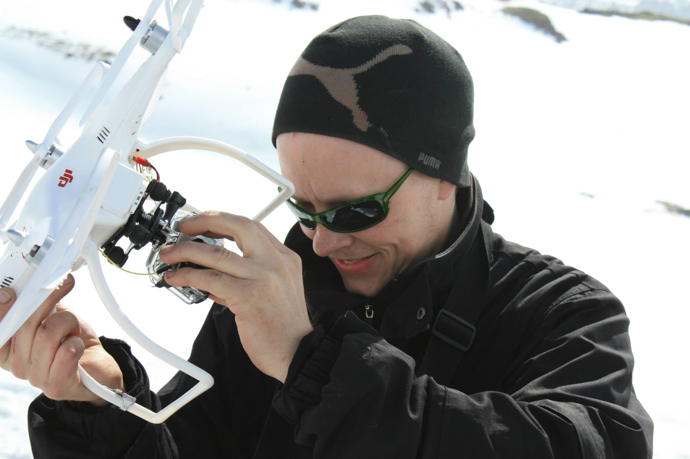

About Hlynur Land design
The fjords and sharp coastlines makes this design look good and backed up with backlight it gives a strong look and people often notice them immediately the enter a room which has one on its walls. It is possible to customise the product. Hlynur uses a computer controlled metal cutter to cut the product out of the aluminium plates. For the product made out of wood, the process is the same. The LED backlighting strip comes with a remote which helps to control the colour of the backlight. Watch the video and enjoy the details on Hlynur´s working process.
Work process
Video showing Icelandic landscape and the full working process of Hlynur Land design. Music by Magni Ásgeirsson
About the artisan
Hlynur Sveinsson is a licensed car restorer with a passion for design. Hlynur found his calling in design life when he started Hlynur Land Design. There he uses his experience working with metal and paint which he uses in his car workshop, and combines his undying passion for technology. He started with a computer controlled metal cutting machine and then he explored it and customised it. The result is perfect lines cut in metal and wood, bringing the nordic identity to your home. Outside his daily routine and his land designes. Hlynur is a keen photographer and a videomaker. Equipped with the finest camera equppiment and a drone he has done some work for companies in Iceland.